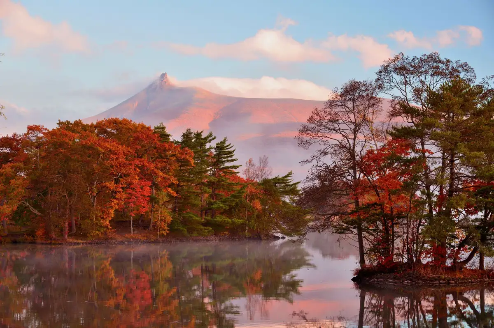
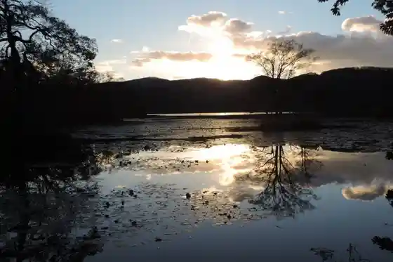
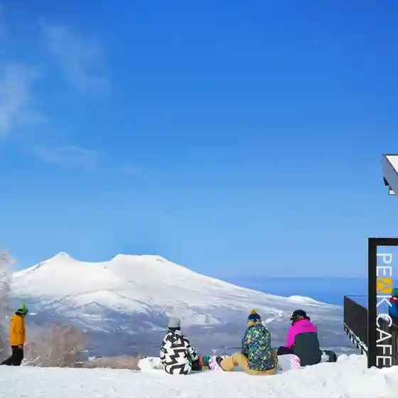
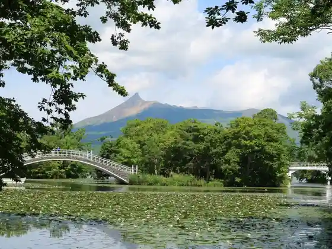

Nanae
Nanae · Hokkaido
Nanae
Highlighted on the Hokkaido map.

Sights
Onuma Kokutei Park
Onuma Quasi-National Park south of Hakodate: lakes and 126 islets formed by Komagatake eruptions.
Shiro Tai Bokujo Lookout Shiro Tai Sukai Line
Jobutai Ranch viewpoint at about 550 m with panoramas of Komagatake, Mount Hakodate, and the Ono plain, plus night views.
Onuma Yusen
Sightseeing boats on Onuma Lake among the islets, with Mount Komagatake as backdrop (about 30 minutes).

Hakodate Nanae Su no Park
Hakodate Nanae Snow Park ski resort reached by a long gondola to about 1,000 m, with views of Komagatake and Onuma.

Onuma Konuma Kohan Promenade
Lakeside walking paths linking Onuma and Konuma islets by bridges, with seasonal views of Mount Komagatake.

Numa no Ie
Numa-no-Ie, a shop founded in 1905 known for Onuma sightseeing dango sweets listed on Hokkaido tourism.
Ikusanda Onuma Kanuhausu
Ikkyander Onuma canoe house offering seasonal guided paddling tours on the lake below Mount Komagatake.
Hakodate Jo Kura
Hakodate Jozo sake brewery in the Oshima region, focused on sake paired with southern Hokkaido ingredients.
Higurashi Yama Lookout
Higureyama viewpoint overlooking Onuma Quasi-National Park and Mount Komagatake.
Todai Numa Mizu Basho Taigun Kiji
Skunk-cabbage colony at East Onuma in spring within Onuma Quasi-National Park.